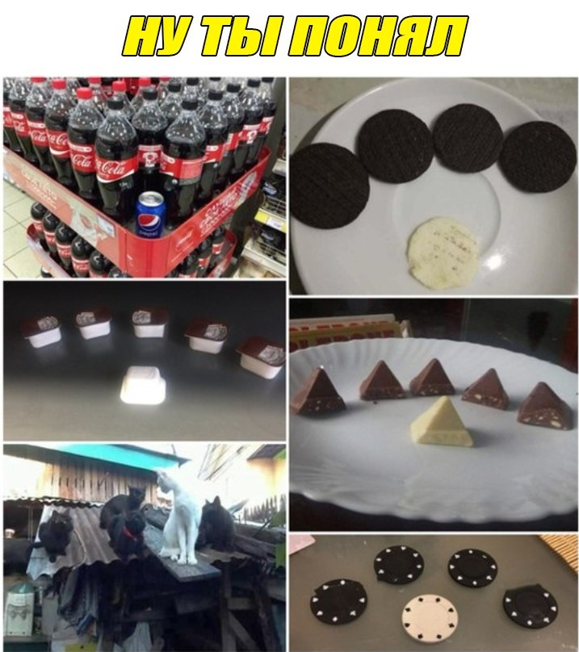

ваня и бравл старс
Зборник историй вани в этом мире.
(страница 7)
ваня и этот мир история 7
Както раз родители вани наказали его за то что он пытался накормить белок камнями.
И за это он должен сидеть дома 2 недели.
Когда ване надоело сидеть дома самому, то он ришил позвать свого друга.
Друг вани был не самым глупым и порекомендовал ване скачать игру бравл старс.
ване настолько понравилась игра то что он перестал есть, пить,ходил в туалет под себя,перестал ориентироваться когда ночь а когда день.
ваня провел так 4 дня подряд.
Когда ваня думал что все знает про эту игру то оказалось что там есть донаты.
ваня задонил свои последние 100 гривен на уродские скины.
Когда ване стало мало то он решил украсть карточку у мамки.
ваня купил все скины.
После этого ване стали писать игроки о том что купят аккаунт.
Один чувак предложил ване 500 гривен за его аккаунт.
ваня тут же отправил свой аккаунт и ждал деньги.
Чувак сказал что ваня мамонт и его только что заскамили после чего его заблокировал.
ваня очень сильно расстроился, ну решил не унывать и создал исче один акаунт, и задонил одну папкнину зарплату.
Когда вечером проехали родители то они были очень злые, и спрашивали куда пропали деньги с карточки.
Когда родители узнали что ихний сынок потратил 50000 грн в игру где его заскамили они были в бешенстве.
Родители отправили ваню в африку, чтобы он отрабатывал потраченные деньги.
Мораль всей басни такова,кормите белок орехами а не камнями.

(здесь может быть ваша реклама.)